Manual de usuario
Sistema de la peluquería Studio Bella, hecho sobre Odoo 18.
Para recepción y administración.
Con este sistema se agendan las citas de cada estilista, se venden productos, se cobra con factura, se avisa a los clientes el día antes de su turno y se compra a los proveedores. Este manual explica cómo hacer cada tarea, paso a paso. Las capturas son de los datos de ejemplo.
1.Cómo entrar
- Abrí el navegador y entrá a la dirección del sistema. En la computadora donde está instalado es http://localhost:8069/web/login?db=peluqueria.
- Escribí tu usuario y tu contraseña y tocá Iniciar sesión.
- Con el botón de los cuadraditos (arriba a la izquierda) abrís el menú de aplicaciones: elegí Studio Bella.
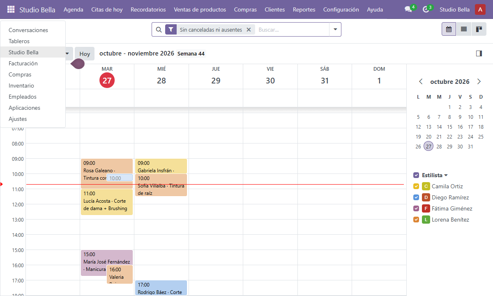
Los menús de Studio Bella
| Menú | Para qué sirve |
|---|---|
| Agenda | El calendario con las citas de todos los estilistas. |
| Citas de hoy | Las citas del día ordenadas por estado: para recibir, atender y cobrar. |
| Recordatorios | Los turnos de mañana, para avisarles a los clientes por WhatsApp o por correo. |
| Ventas de productos | Ventas de mostrador, sin cita. |
| Compras | Recepción de mercadería; pedidos a proveedores y reposición de stock (solo Administración). |
| Cierre de caja | Lo cobrado en el día y el arqueo del efectivo. |
| Comisiones | Lo que se le paga a cada estilista por su trabajo (solo Administración). |
| Clientes | Las fichas de los clientes, las clientas que no vuelven, las fichas técnicas y los puntos. |
| Reportes | Servicios realizados y productos vendidos (solo Administración). |
| Configuración | Servicios, productos, estilistas, horarios y ajustes (solo Administración). |
| Ayuda | Este manual. |
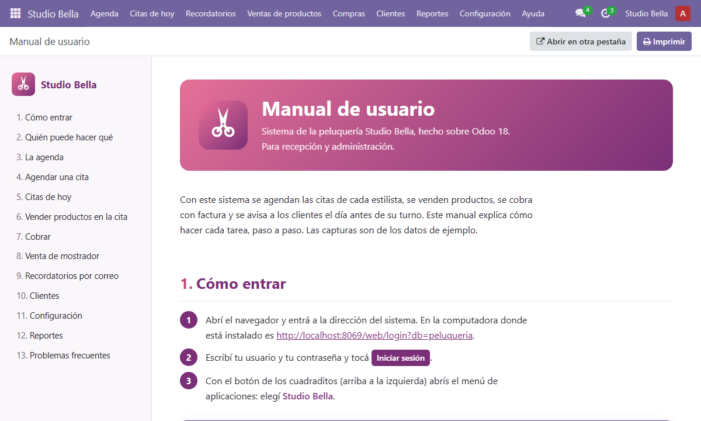
2.Quién puede hacer qué
Cada usuario tiene uno de estos dos permisos de Studio Bella:
| Tarea | Recepción | Administración |
|---|---|---|
| Agendar, confirmar, cancelar y mover citas | Sí | Sí |
| Vender productos y cobrar | Sí | Sí |
| Cargar y editar clientes | Sí | Sí |
| Mandar recordatorios por WhatsApp o correo | Sí | Sí |
| Recibir la mercadería de los proveedores | Sí | Sí |
| Confirmar los turnos pedidos por internet | Sí | Sí |
| Cerrar la caja del día | Sí | Sí |
| Cargar fichas técnicas e invitar a volver a las clientas | Sí | Sí |
| Usar los puntos de la clienta al cobrar | Sí | Sí |
| Reabrir una caja cerrada | No | Sí |
| Hacer pedidos a proveedores y reponer stock | No | Sí |
| Ver los reportes | No | Sí |
| Liquidar comisiones y cargar puntos a mano | No | Sí |
| Cargar servicios, productos, stock y estilistas | No | Sí |
| Borrar citas y ventas | No | Sí |
Los permisos se asignan en Ajustes › Usuarios: abrí el usuario y, en la sección Studio Bella, elegí Recepción o Administración.
3.La agenda
Entrá a Studio Bella › Agenda. Cada columna es un día y cada color es un estilista.

- Cambiar de semana: con las flechas ← →; Hoy vuelve a la semana actual. El calendario chico de la derecha lleva a cualquier fecha.
- Ver por día o por mes: con el botón Semana ▾.
- Ver solo algunos estilistas: desmarcá en la lista de la derecha los que no quieras ver.
- Ver una cita: hacé clic en ella para ver el resumen (horario, cliente, teléfono, servicios, estilista y estado) y Editar para abrirla completa.
- Cambiar el horario: arrastrá la cita a otro día u hora. Para que dure más o menos, estirá su borde de abajo.
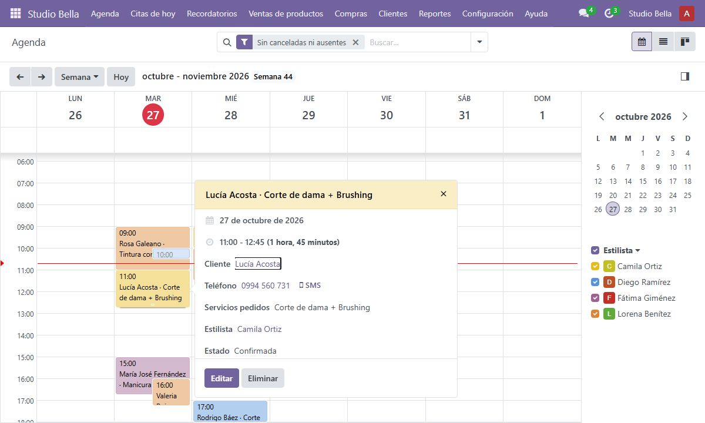
4.Agendar una cita
- En la Agenda, hacé clic en el horario libre (el día y la hora en que viene el cliente). También podés usar el botón Nuevo.
- Cliente: escribí el nombre y elegilo de la lista. Si es nuevo, elegí Crear y editar… y cargá su teléfono y su correo: con el correo le llega el recordatorio.
- Estilista: quién lo va a atender.
- Inicio: la fecha y la hora (si hiciste clic en la agenda, ya está cargada).
- Servicios: en la pestaña Servicios tocá Agregar una línea y elegí el servicio. El precio y la duración se completan solos (se pueden cambiar). Agregá todos los servicios que pidió.
- El Fin se calcula sumando la duración de los servicios. Guardá con el ícono de la nube, arriba.

En la pestaña Notas se anotan las preferencias del cliente, la fórmula de color o las alergias.
Si el sistema no te deja guardar
La agenda controla que no haya errores. Estos son los avisos y qué hacer:
| Aviso | Qué significa |
|---|---|
| Camila Ortiz ya tiene la cita CITA/2026/0014 (Lucía Acosta) de 11:00 a 12:45. | La estilista está ocupada a esa hora. Elegí otro horario u otra estilista. |
| Diego Ramírez no trabaja el domingo 1/11 de 10:00 a 10:30. | Es fuera del horario de atención (lunes a sábado de 8:00 a 19:00), un feriado o un día de cierre. |
| Diego Ramírez no hace: Manicura. | Ese estilista no hace ese servicio. Elegí a otro. |
| La cita tiene que terminar después de empezar. | Revisá el Inicio y el Fin. |
5.Citas de hoy
En Studio Bella › Citas de hoy están las citas del día en columnas, según en qué paso están: Agendada → Confirmada → En atención → Cobrada. Cada tarjeta muestra el horario, el cliente, los servicios, el teléfono, el total y la inicial del estilista.

Dentro de la cita, los botones de arriba cambian su estado:
| Botón | Cuándo usarlo |
|---|---|
| Confirmar | El cliente confirmó que viene. |
| Empezar a atender | El cliente llegó y se lo está atendiendo. |
| Cobrar | Terminó el trabajo: ver Cobrar. |
| Recordatorio por WhatsApp | Avisarle su turno por WhatsApp: ver Recordatorios. |
| Recordatorio por correo | Mandarle ahora el correo con su turno (solo si tiene correo cargado). |
| No vino | El cliente faltó. El horario queda libre. |
| Cancelar cita | El cliente avisó que no viene. El horario queda libre. |
| Volver a agendar | Reactivar una cita cancelada o en la que no vino. |
6.Vender productos en la cita
Si el cliente se lleva un producto (shampoo, mascarilla, cera…), cargalo en la misma cita y se cobra todo junto, en una sola factura.
- En la cita, abrí la pestaña Productos vendidos y tocá Agregar una línea.
- Elegí el producto y la cantidad. El precio se completa solo.
- La columna En stock muestra cuántos hay en el depósito. Si se pone en rojo, no alcanza.
Solo aparecen los productos de reventa. Los de uso profesional (tintes, oxidantes, keratina) no se venden: se descuentan solos cuando se cobra un servicio que los usa.
7.Cobrar
- En la cita, tocá Cobrar.
- Elegí la forma de pago: Efectivo, Tarjeta o Transferencia / QR. El diario se elige solo: el efectivo va a la caja y la tarjeta y la transferencia, al banco.
- Si paga en efectivo, escribí en Efectivo recibido con cuánto paga y el sistema calcula el vuelto.
- Tocá Cobrar.

Al cobrar, el sistema hace todo esto de una vez:
- Emite la factura con el IVA incluido en el precio y la deja pagada.
- Descuenta del stock los productos vendidos y los insumos de los servicios (por ejemplo, el tinte y el oxidante de una tintura).
- La cita pasa a Cobrada. Arriba aparecen los botones Factura y Mov. de stock.
- Si el programa de puntos está activo, la clienta gana puntos por lo que pagó. En el historial de la cita queda escrito cuántos ganó y cuántos tiene.
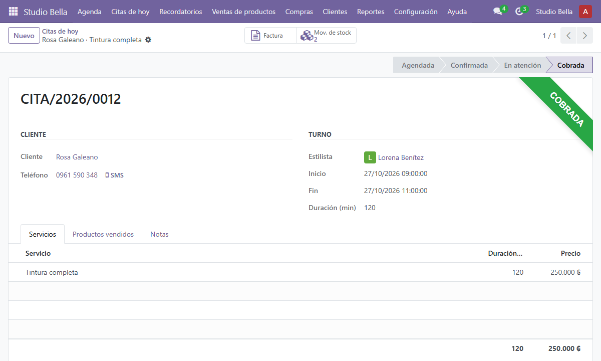
Pagar con puntos
Si la clienta tiene puntos, la ventana de cobro muestra cuántos tiene y hasta cuántos se pueden usar en ese cobro. Escribí en Puntos a usar los que quiera usar: el Total a cobrar baja y el vuelto se calcula sobre el nuevo total. En la factura el descuento aparece como una línea "Descuento por N puntos", con el IVA bien calculado.
Imprimir o mandar la factura
Tocá Factura en la cita. En la factura, Imprimir la descarga en PDF y Enviar se la manda al cliente por correo.

Si no te deja cobrar
| Aviso | Qué hacer |
|---|---|
| No hay stock suficiente para cobrar: • Shampoo reparador 300 ml: se venden 2 y hay 1 | En el sistema no hay tantos. Pedile a Administración que corrija el stock (Productos y stock) o quitá el producto de la cita. |
| El efectivo recibido es menor que el total a cobrar. | Revisá el monto que escribiste. |
| Cargue los servicios realizados antes de cobrar la cita. | La cita no tiene servicios ni productos. |
| Se pueden usar hasta 12 puntos en este cobro. | Escribiste más puntos de los que tiene la clienta o de los que hacen falta para el total. |
8.Venta de mostrador
Para alguien que pasa a comprar un producto sin tener cita.
- Entrá a Studio Bella › Ventas de productos y tocá Nuevo.
- El cliente es Consumidor final. Si pide factura a su nombre, elegí el cliente.
- Agregá los productos en la pestaña Productos.
- Tocá Cobrar: funciona igual que en la cita.
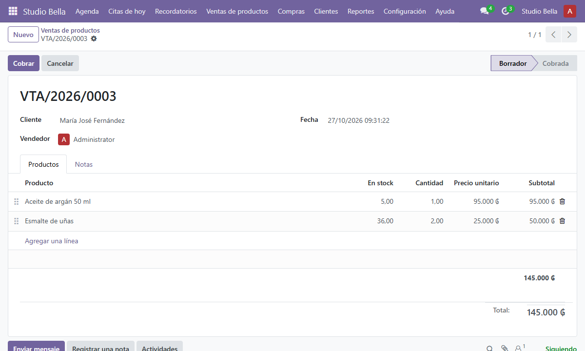
Una venta que todavía no se cobró se puede Cancelar. Una venta cobrada se anula con una nota de crédito, igual que una cita.
9.Cierre de caja
Al terminar el día se cierra la caja: el sistema suma lo que se cobró con cada forma de pago y te dice cuánto efectivo tiene que haber. Vos contás la plata y ves si cuadra.
- Entrá a Studio Bella › Cierre de caja y tocá Nuevo. El día ya viene puesto y aparece lo cobrado en efectivo, con tarjeta y por transferencia, con la lista de las citas y las ventas de ese día.
- Revisá el Cambio al abrir (el efectivo que había a la mañana; viene de lo que quedó en el cierre anterior) y cargá las Salidas de efectivo si se sacó plata de la caja durante el día: compras chicas, pagos o un depósito al banco.
- Contá el efectivo de la caja y cargalo en Efectivo contado. El sistema te dice si cuadra, si sobra o si falta, y cuánto.
- Revisá cuánto queda de cambio para mañana: el sistema calcula cuánto hay para retirar.
- Tocá Cerrar caja. Con Imprimir sale el comprobante, con lugar para que firmen quien entrega y quien recibe la plata.
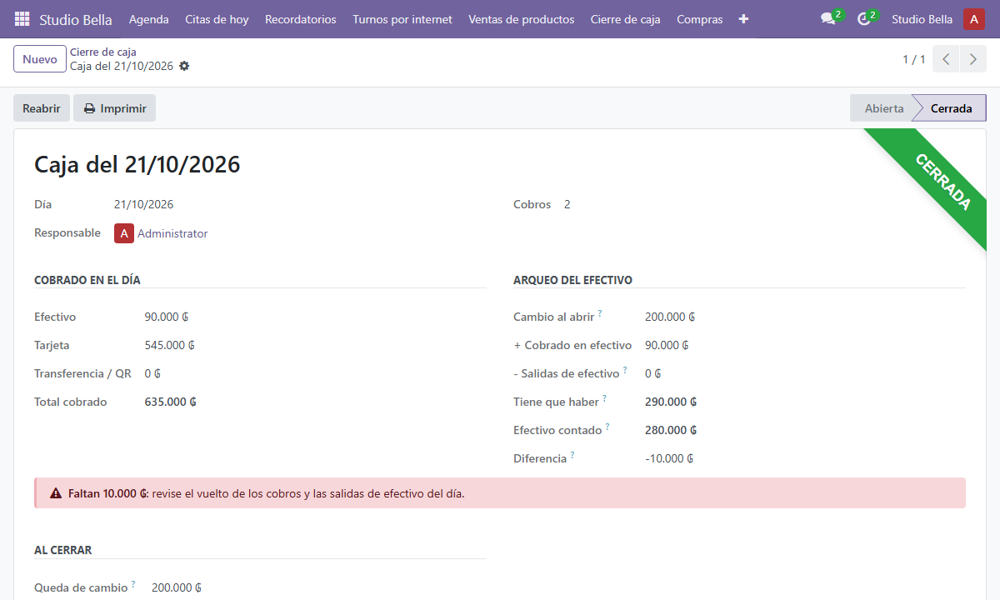
- Mientras la caja del día está abierta, cada cobro nuevo se suma solo.
- Con la caja cerrada no se puede cobrar con la fecha de ese día. Si hace falta corregir algo, alguien de Administración la abre con Reabrir.
- Hay un solo cierre por día.
- La tarjeta y la transferencia no están en la caja: se controlan con el resumen del banco o del POS.
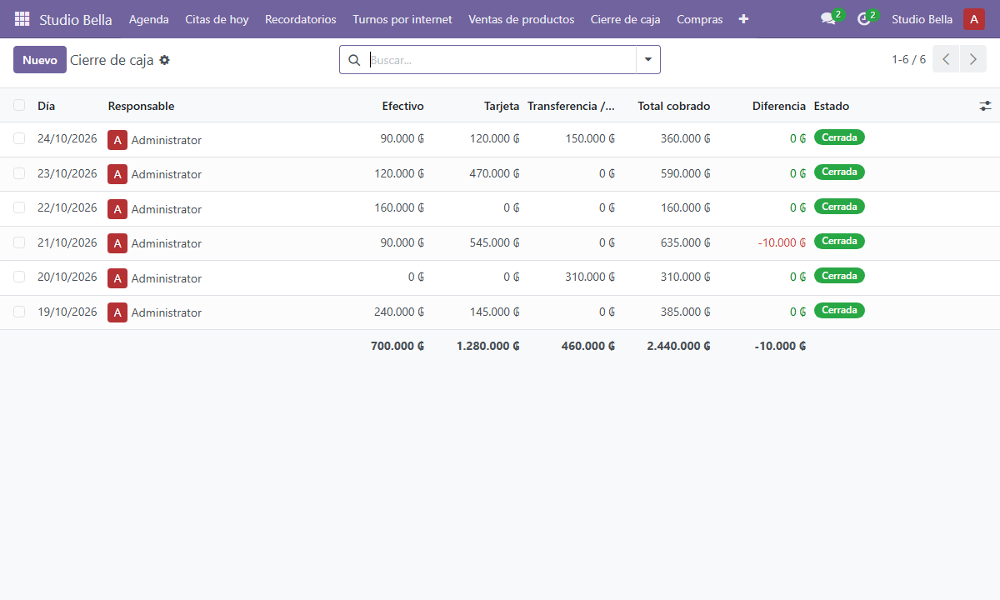
10.Recordatorios por WhatsApp y por correo
El día antes de cada turno hay que avisarle al cliente. Hay dos formas:
- Por correo, solo: todos los días a las 10:00 el sistema manda un correo a los clientes que tienen cita al día siguiente y tienen correo cargado. No hay que hacer nada.
- Por WhatsApp, con un clic: para los que no tienen correo (o si preferís avisar por WhatsApp).
Mandar los recordatorios por WhatsApp
- Entrá a Studio Bella › Recordatorios. Aparecen los turnos de mañana a los que todavía no se les avisó.
- En cada cliente, tocá WhatsApp. Se abre WhatsApp (en el navegador o en la aplicación) con el chat del cliente y el mensaje ya escrito: el día, la hora, los servicios y quién lo atiende.
- Tocá Enviar en WhatsApp y volvé al sistema para seguir con el próximo.
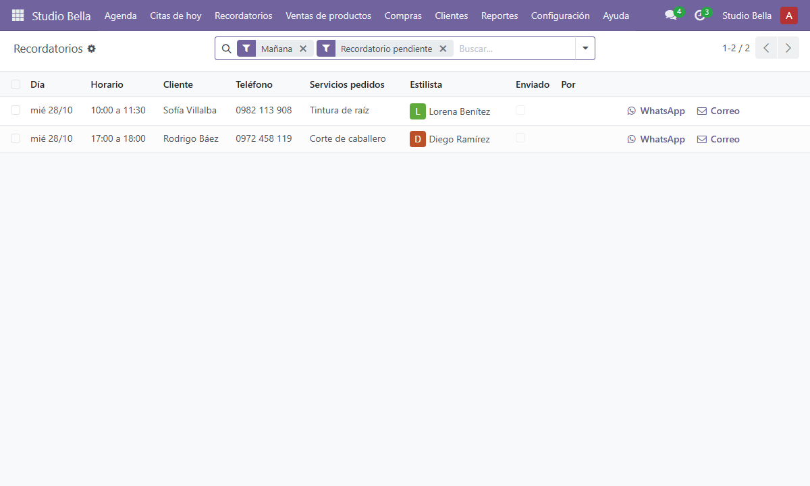
El mensaje que le llega al cliente es así:
También se puede mandar desde la cita, con el botón Recordatorio por WhatsApp.
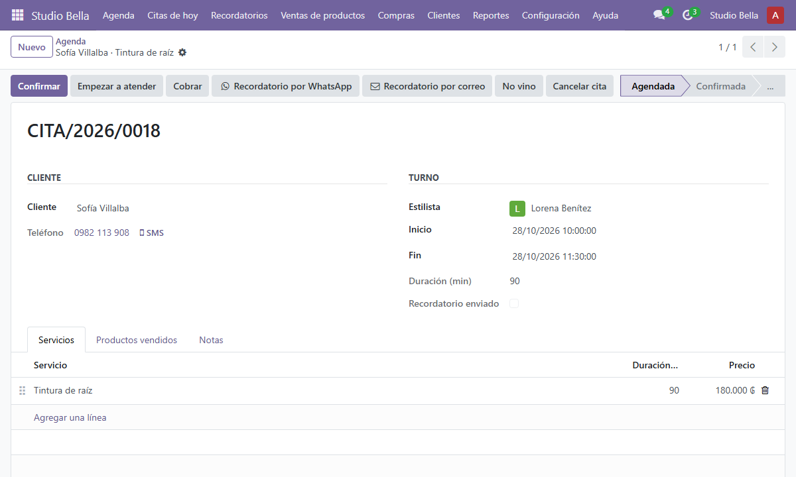
- Al tocar el botón, la cita queda marcada como Recordatorio enviado (por WhatsApp o por correo) y sale de la lista. Queda anotado en el historial de la cita.
- Si cambiás la hora o el estilista de la cita, se desmarca para que le avises el horario nuevo.
- Los sábados, para avisar a los clientes del lunes, cambiá el filtro Mañana por Próximos 3 días en la barra de búsqueda.
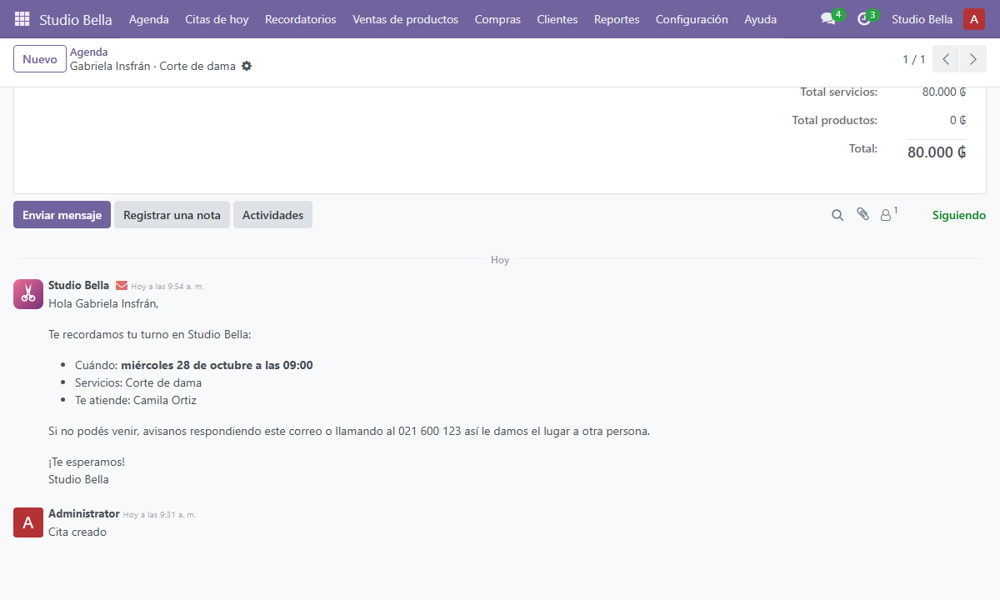
11.Turnos por internet
Las clientas pueden sacar turno solas desde el celular, a cualquier hora, con un enlace que compartís por WhatsApp, Instagram o Facebook. Los turnos entran directo a la agenda.
Lo que ve la clienta
- Elige uno o más servicios. Ve el precio (con IVA) y cuánto dura cada uno.
- Elige la estilista, o Cualquiera para el primer horario libre. Solo aparecen las estilistas que hacen todos los servicios que eligió.
- Elige el día y la hora. Solo aparecen los horarios libres: se respeta el horario de cada estilista, los feriados, los cierres y las citas que ya hay. No se puede reservar con menos de una hora de anticipación ni más de 14 días adelante.
- Deja su nombre y su celular (el correo es opcional) y toca Reservar.
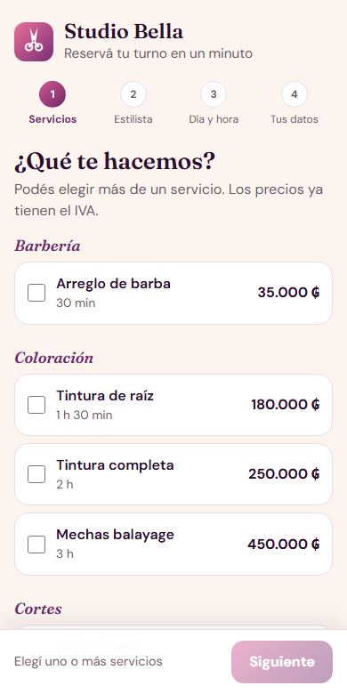
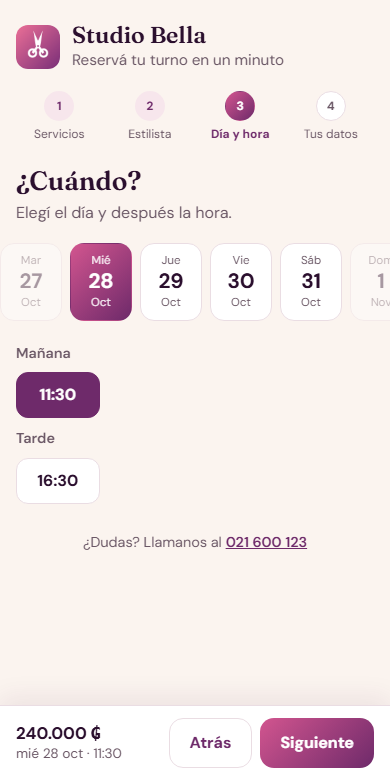
Lo que pasa en el sistema
- El turno entra a la agenda como Agendada, con la marca Internet. Ese horario ya no se le ofrece a nadie más.
- Si la clienta ya estaba cargada, se la reconoce por el celular, aunque lo escriba con +595 o sin el 0. Si es nueva, se la agrega a Clientes.
- Los turnos pedidos están en Studio Bella › Turnos por internet › Turnos pedidos. Escribile o llamala y tocá Confirmar, como en cualquier cita.
- El día anterior recibe el recordatorio igual que las demás clientas.
- Para evitar abusos, una misma clienta puede tener hasta 3 turnos pendientes pedidos por internet.
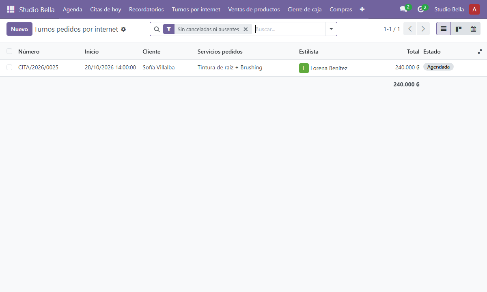
El enlace para compartir
En Studio Bella › Turnos por internet › Página para las clientas se abre la página tal como la ven ellas. La dirección es la del sistema seguida de /turnos (por ejemplo, https://studiobella.com.py/turnos): esa es la que se comparte.
12.Clientes
En Studio Bella › Clientes están todas las fichas. Para cargar uno nuevo, tocá Nuevo y completá el nombre, el teléfono y el correo.
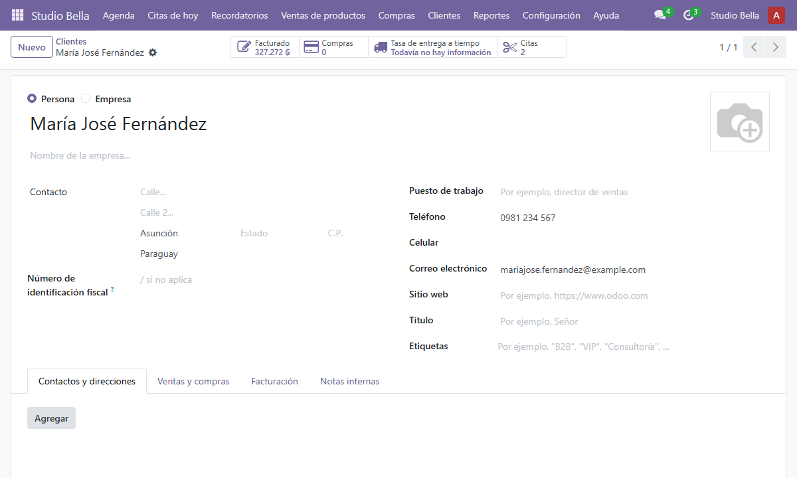
En la pestaña Studio Bella de la ficha están su última visita, cuántos días hace que no viene, cuántas veces vino, cuánto gastó en citas y su próximo turno. Ahí también se cargan sus alergias, su tipo de cabello y sus fichas técnicas. Si tiene puntos, arriba aparece el botón Puntos con su saldo.
Ficha técnica y alergias
La ficha técnica guarda lo que se le hizo a la clienta y con qué, para repetirlo igual la próxima vez aunque la atienda otra estilista.
- En la cita, abrí la pestaña Ficha técnica y tocá Agregar una línea.
- Elegí el tipo (color, mechas, alisado, tratamiento u otro) y escribí la fórmula y los productos: por ejemplo, "6.0 + 6.1 en partes iguales (30 g c/u), oxidante 20 vol 60 ml".
- Anotá el tiempo de pose y, al terminar, el resultado ("cubrió bien las canas; la próxima, raíz a las 5 semanas"). Si querés, subí una foto de cómo quedó.
- Tocá Guardar y cerrar. La clienta, la estilista y la fecha salen de la cita.
Debajo aparecen los trabajos anteriores de la clienta, con su fórmula y quién los hizo. Todas las fichas se buscan en Clientes › Fichas técnicas (por clienta, por fórmula o por estilista).
Clientas que no vuelven
En Clientes › Clientas que no vuelven están las clientas que hace más de 6 semanas no vienen y no tienen un turno pedido, de la que hace más tiempo a la más reciente. Se ve su última visita, cuántas veces vino y cuánto gastó.
- Tocá Invitar en la fila de la clienta: se abre WhatsApp con un mensaje que la invita a volver, con el enlace de la página de turnos y, si tiene, sus puntos para usar.
- Revisá el mensaje y tocá Enviar en WhatsApp.
- En la lista queda la fecha en que la invitaste (Invitada a volver el).
Con los filtros de la barra de búsqueda se puede ver a las que no vienen hace más de 3 o 6 meses, a las que todavía no se invitó o a las que venían seguido. En cuanto la clienta pide un turno, sale de la lista.
Programa de puntos
Con el programa activo (se activa en Ajustes), cada clienta gana 1 punto cada 10.000 ₲ que paga y cada punto vale 500 ₲ de descuento: recupera el 5 % de lo que gasta. Los dos montos se pueden cambiar. Los puntos se usan al cobrar.
- El saldo de cada clienta está en el botón Puntos de su ficha y en su cita, al lado del teléfono.
- En Clientes › Puntos están todos los movimientos: los ganados, los usados y los cargados a mano. Administración puede agregar puntos (un regalo de cumpleaños) o corregirlos.
- El cliente "Consumidor final" (ventas de mostrador sin nombre) no suma puntos.
13.Comisiones
Cada estilista cobra un porcentaje de los servicios que hace y de los productos que vende en sus citas. Los porcentajes se cargan en su ficha. La comisión se calcula sobre lo cobrado, con el IVA incluido (solo Administración).
- Entrá a Studio Bella › Comisiones y tocá Nuevo.
- Elegí la estilista y el período (por ejemplo, del 1 al 15). Al guardar, el sistema junta los servicios y productos de sus citas cobradas en esas fechas (cuenta el día del cobro, como en el cierre de caja) y calcula la comisión. Las citas con la factura anulada por nota de crédito no entran.
- Si se le dio un adelanto, escribilo en Adelantos: se descuenta de lo que hay que pagarle.
- Tocá Imprimir para el comprobante que firma la estilista.
- Al pagarle, tocá Marcar como pagada.
14.Compras y recepción de mercadería
Así se reponen los productos y los insumos: Administración hace el pedido al proveedor, la recepción recibe la mercadería cuando llega y el stock sube solo. Todo está en Studio Bella › Compras.
El aviso de "Reponer stock"
Cada producto tiene un stock mínimo. Cuando, al vender o al gastarse en un servicio, queda menos que eso, el sistema crea una actividad Reponer stock. Las actividades se ven en el ícono del reloj, arriba a la derecha: el número indica cuántas hay.
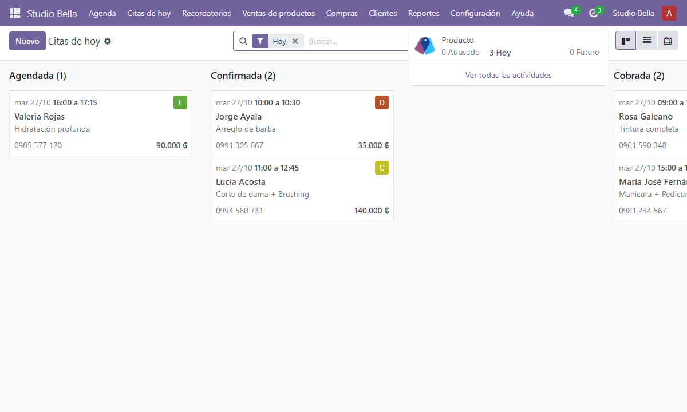
El aviso dice cuántos quedan y cuántos conviene pedir. Se cierra solo cuando llega la mercadería.
Hacer un pedido al proveedor (Administración)
La forma más rápida es Compras › Reponer stock: muestra cada producto con lo que hay, lo que está por llegar (Pronóstico), el mínimo, el máximo y cuánto pedir (Por ordenar). En los que hay que pedir aparece el botón Orden, que arma el pedido al proveedor del producto.
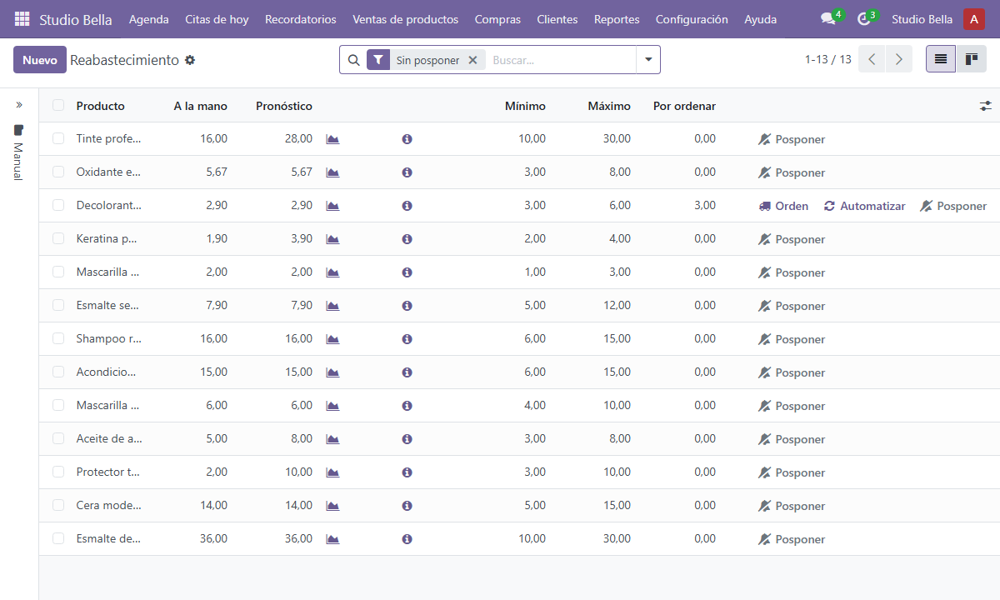
También se puede hacer el pedido a mano en Compras › Pedidos a proveedores › Nuevo: elegí el proveedor y agregá los productos con la cantidad y el precio.
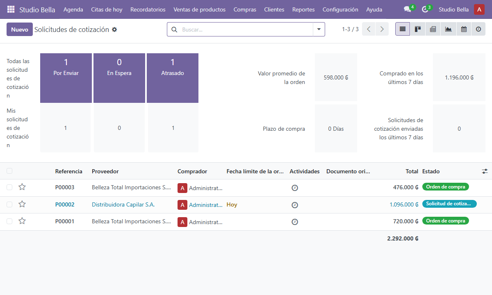
- Revisá el pedido y tocá Confirmar orden.
- Para mandárselo al proveedor, usá Enviar por correo electrónico o imprimilo desde el ícono del engranaje (Imprimir).
- Al confirmarlo se prepara sola la recepción de la mercadería (botón Recepción arriba).
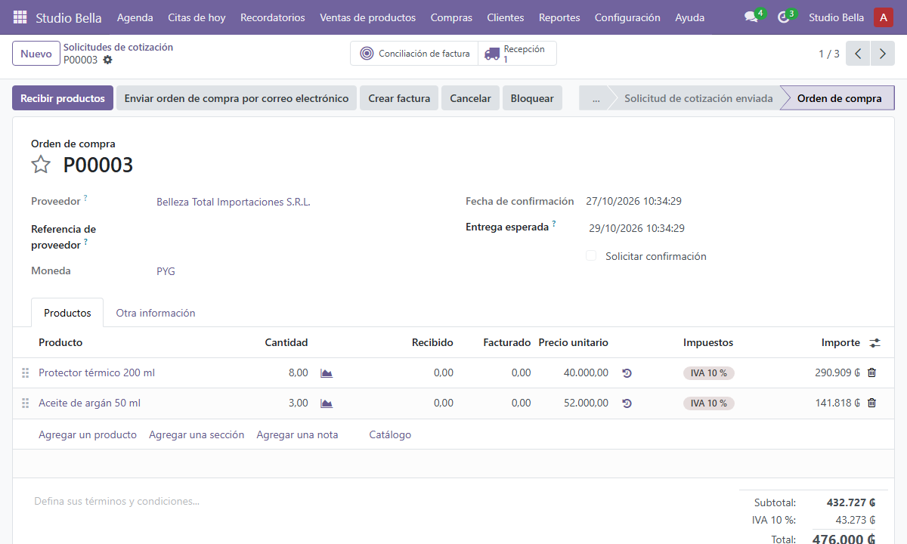
Recibir la mercadería (Recepción)
- Cuando llega el pedido, entrá a Compras › Recepción de mercadería y abrí la recepción de ese proveedor.
- Contá lo que llegó. Si vino menos de algo, corregí la Cantidad de esa línea.
- Tocá Validar. El stock sube y se cierran los avisos de reponer.
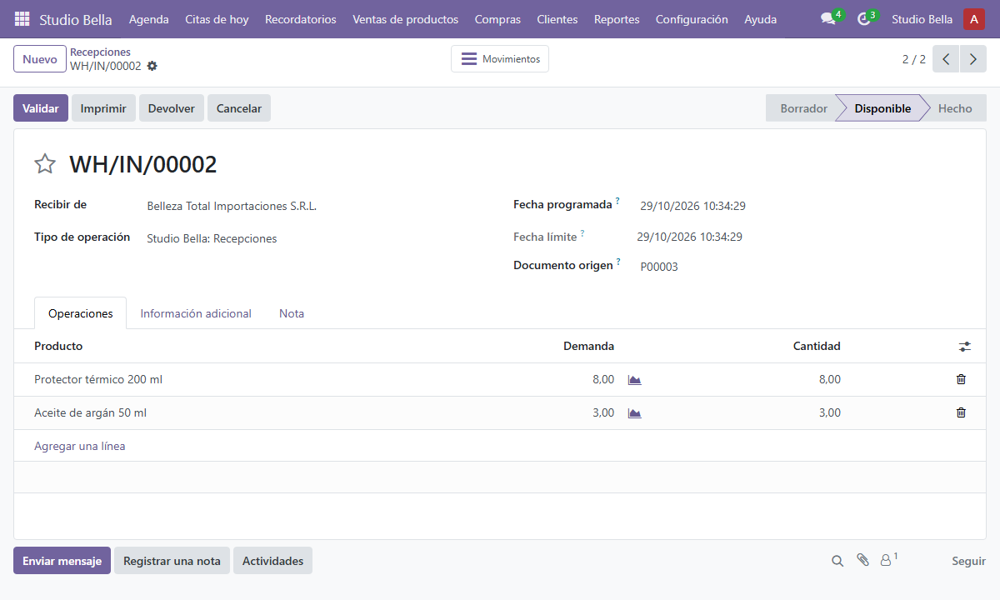
La factura del proveedor (Administración)
En el pedido, Crear factura arma la factura del proveedor con lo recibido. Cargá el número de la factura que te dio (por ejemplo, 001-001-0004521) y la fecha, y confirmala.
15.Configuración
Esta parte es solo para usuarios de Administración.
Servicios
En Configuración › Servicios está la lista de servicios con su duración y su precio.
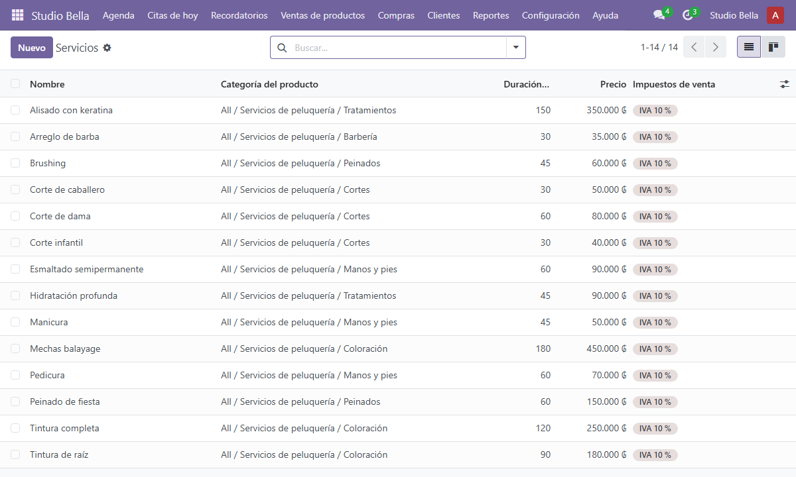
Para crear uno, tocá Nuevo y cargá:
- Nombre y Categoría (Cortes, Coloración, Tratamientos, Peinados, Barbería, Manos y pies).
- Precio de venta con el IVA incluido e Impuestos: IVA 10 %.
- En la pestaña Studio Bella: la duración en minutos, los insumos que gasta cada vez y si se reserva por internet (ver Turnos por internet).

Productos y stock
En Configuración › Productos están los productos con lo que hay en stock y su mínimo. Los que están por debajo del mínimo aparecen en rojo; el filtro Por reponer muestra solo esos.

- Producto de reventa: con la casilla Ventas marcada. Aparece al vender en citas y en el mostrador.
- Producto de uso profesional: con la casilla Ventas desmarcada. No se vende; se carga como insumo de los servicios.
- Proveedor y precio de compra: en la pestaña Compras del producto.
- Stock mínimo: en la pestaña Studio Bella, el Stock mínimo (cuándo avisar) y Pedir hasta (cuánto tener después de reponer). Ver Compras.
- Corregir el stock: si el conteo no coincide con el sistema, abrí el producto, tocá Actualizar cantidad y escribí la cantidad que contaste. La mercadería que llega de un proveedor se carga con la recepción, no con esto.
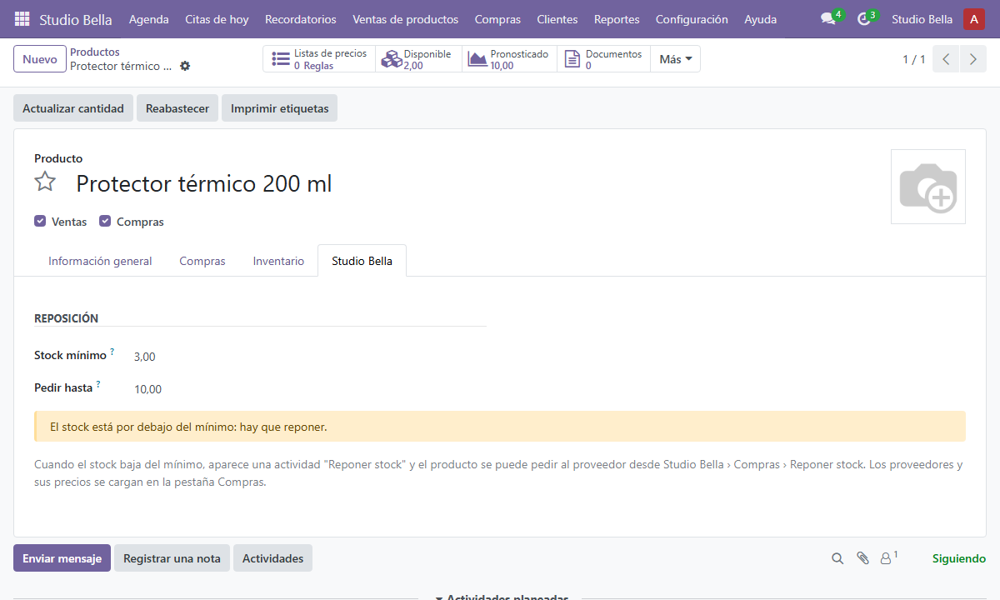
Estilistas
En Configuración › Estilistas están las personas que atienden. Cada estilista es un empleado de Odoo.
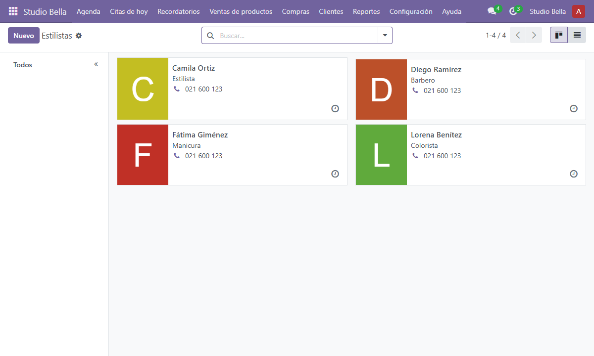
Para agregar uno, tocá Nuevo, escribí el nombre y en la pestaña Studio Bella marcá Atiende en Studio Bella y elegí los servicios que realiza (si se deja vacío, puede hacer todos). Su horario de trabajo está en la pestaña Información de trabajo. En la misma pestaña Studio Bella van sus % de comisión por servicios y por productos (ver Comisiones).

Horario de atención y feriados
En Configuración › Horarios de atención (solo para el administrador del sistema) se definen los días y horas de trabajo. La peluquería atiende de lunes a sábado de 8:00 a 19:00.
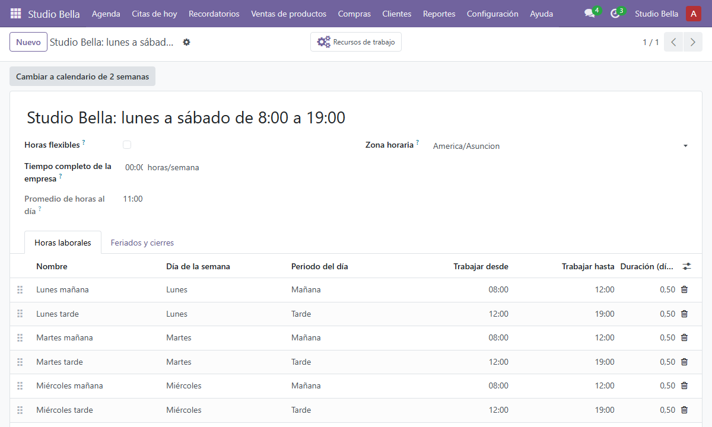
En la pestaña Feriados y cierres se cargan los días en que la peluquería está cerrada: tocá Agregar una línea, escribí el motivo y la fecha. Esos días la agenda no deja dar turnos.

Ajustes
En Configuración › Ajustes (solo para el administrador del sistema):
- Programa de puntos: se activa o se apaga, y se eligen cada cuánto se gana un punto y cuánto vale.
- Página de turnos: la dirección de internet de la página de turnos que va en el mensaje para invitar a volver a las clientas.
Después de cambiar algo, tocá Guardar arriba.
16.Reportes
En Studio Bella › Reportes (solo Administración):
Servicios realizados
Qué servicios se hicieron y cuánto se facturó, solo de las citas cobradas. De entrada muestra el mes actual; el filtro de fecha se cambia en la barra de búsqueda.

Con el botón de la tabla (arriba a la derecha) se ve cuánto facturó cada estilista en cada categoría. El botón ⤓ la descarga en Excel.

Productos vendidos
Las cantidades vendidas de cada producto, en citas y en el mostrador.
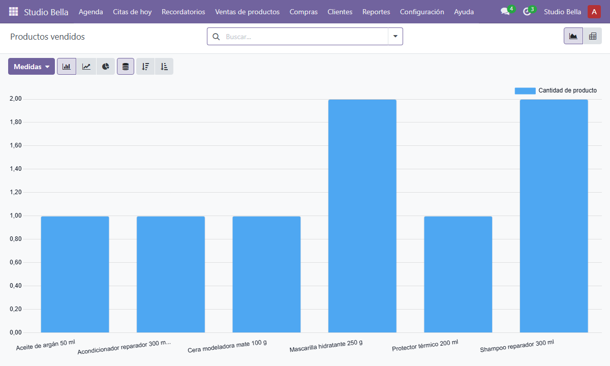
17.Problemas frecuentes
Entro al sistema y me aparece otra empresa u otro sistema
Estás en otra base de datos. Salí, y en la pantalla de inicio de sesión elegí la base peluqueria (ver Cómo entrar).
Al cobrar dice que la caja está cerrada
Ya se cerró la caja de ese día. Si hay que cobrar algo más con esa fecha, alguien de Administración abre el cierre en Studio Bella › Cierre de caja, toca Reabrir, y después de cobrar lo vuelve a cerrar (ver Cierre de caja).
Una clienta no encuentra el horario que quiere en la página de turnos
La página solo muestra horarios en los que la estilista está libre todo el tiempo que duran los servicios elegidos. Si eligió varios servicios largos, probá con Cualquiera o con menos servicios. También puede ser que la estilista no haga alguno de esos servicios (ver Estilistas).
No me deja guardar la cita
Leé el aviso: el estilista está ocupado, es fuera del horario o feriado, o no hace ese servicio. Ver la tabla de Agendar una cita.
No encuentro un servicio al cargar la cita
Tiene que estar en Configuración › Servicios. Si el estilista tiene una lista de servicios que realiza, tiene que estar en esa lista.
No encuentro un producto para vender
En la ficha del producto tiene que estar marcada la casilla Ventas y tiene que estar en Configuración › Productos.
No me deja cobrar por falta de stock
El sistema cree que no hay suficiente. Administración corrige el stock con Actualizar cantidad en el producto. Ver Productos y stock.
El cliente no recibió el recordatorio por correo
Revisá que tenga el correo bien cargado en su ficha, que la cita esté agendada o confirmada y que esté configurado el servidor de correo (ver Recordatorios). Si no usa el correo, mandáselo por WhatsApp.
No aparece el botón de WhatsApp
El cliente no tiene teléfono ni celular cargado en su ficha. Cargalo (por ejemplo, 0981 234 567) y el botón aparece.
WhatsApp dice que el número no es válido
Revisá el número en la ficha del cliente. Los números de Paraguay se escriben con el 0 adelante (0981 234 567); los de otro país, con el + y el código del país (+54 9 11 1234 5678).
No se va el aviso de "Reponer stock"
Se cierra solo cuando el stock vuelve a estar por encima del mínimo, al validar la recepción de la mercadería. Si ya no querés que avise, bajá el stock mínimo del producto o marcá la actividad como hecha.
Quiero ver las citas canceladas
En la Agenda, quitá el filtro Sin canceladas ni ausentes de la barra de búsqueda.
Cobré algo mal
La cita cobrada no se modifica. Administración anula la factura con Nota de crédito y se vuelve a cargar la cita o la venta correcta.
Studio Bella · Manual de usuario · Octubre de 2026. Este manual se abre desde Studio Bella › Ayuda › Manual de usuario.